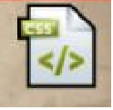
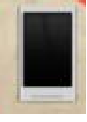

1990
HTML
The firs markup leanguage was
launched to code basic building
blocks of a website
1st Website created
1991

Tim Berner's Lee- Also known
as TimBL is a British Computer
Scientist & Creator of WWW
Table Based Web
1992
Table designs gave more option for
creating websites but were extremely
complex
W3C formed
1994
Flash and javascript
1996
Flash and Javascript
introduced for a more
iteractive web
CSS Design
1998
Faster loading CSS
websites come into
bieng and cost 10x
the table design
-
PHP Websites
PHP3 websites pave
the way for Dynamic
Websites

CSS & Web 2.0
2003
CSS3 introduces new
features & functions
Web2.0 introduces
age of user based
information sites
 2008
Mobile Web
Mobile web takes over more
websites now develop Mobile
version of sites and Apps
 - HTML 5
2010
HTML5 websites are
accesible across
different devices and
provide more enrich
embedded media
experience